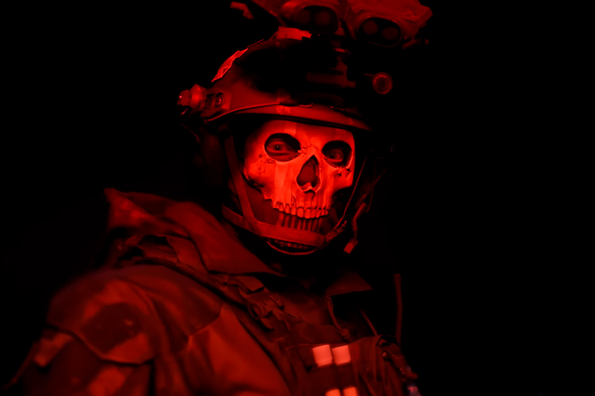
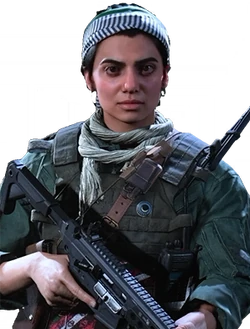
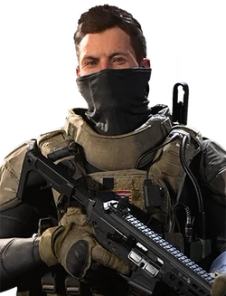
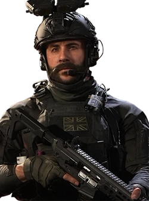
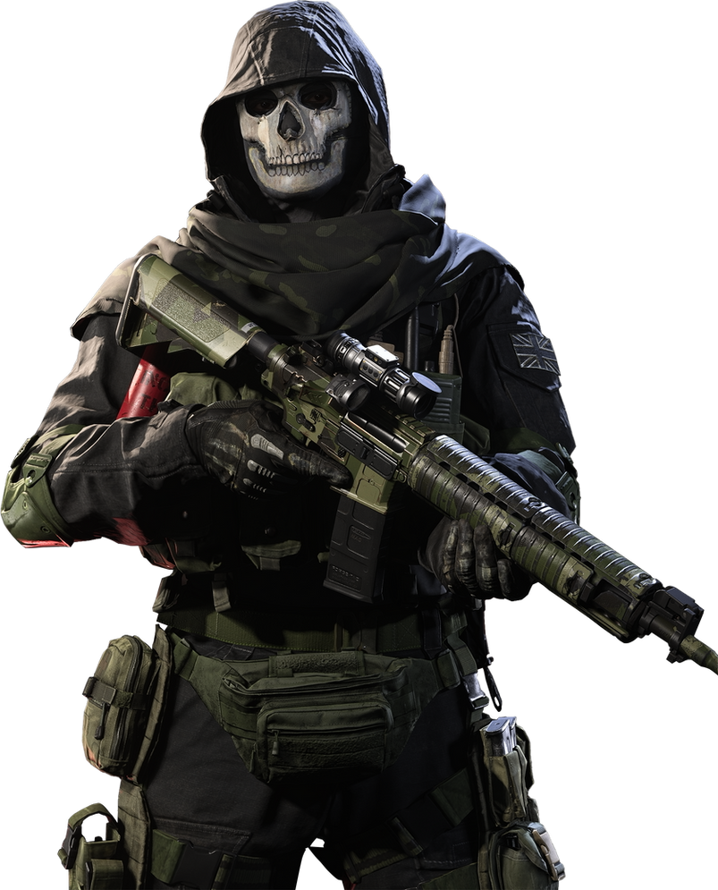
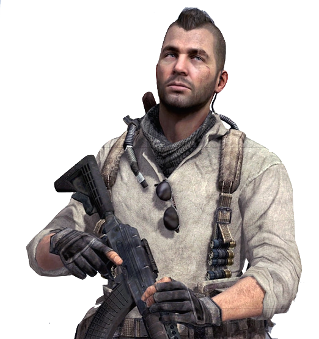

<style>
    div.logo1 {
        display: flex;
        align-items: center;
        justify-content: center;
        flex-direction: column;
        height: auto;
    }

    div.logo1 img {
        max-width: 100%;
        height: auto;
        padding: 15px;
    }

    * {
        transition: all 0.2s ease-in;
    }

    body {
        background: url(images/BO6.jpg) repeat top /cover;
        background-attachment: fixed;
        background-position: center;
        font-family: sans-serif;
    }

    main {
        background-color: #0d0f0e;
        display: flex;
        gap: 1rem;
        flex-wrap: wrap;
        justify-content: center;
        align-items: center;
        width: 950px;
        margin: 2rem auto;
        padding: 1rem;
    }

    main div {
        background: #0009;
        height: 240px;
        width: 220px;
        position: relative;
    }


    main div img {
        object-fit: cover;
        width: 220px;
        height: 240px;
    }

    main div h3 {
        background: #dfdfdf63;
        margin: 0;
        text-align: center;
        font-family: monospace;
        font-size: 1.6rem;
        padding: 20px 10px;
        position: absolute;
        width: 200px;
        bottom: 0px;
        height: 20px;
    }

    main div h3:hover {
        height: 25px;
        background: #3030309c;
        color: white;
        cursor: pointer;
    }

    article {
        background-color: #0d0f0eab;
        color: white;
        display: flex;
        gap: 1rem;
        justify-content: center;
        align-items: center;
        width: 850px;
        margin: 2rem auto;
        padding: 1rem;
        text-align: justify;
    }


    article img {
        width: 240px;
        height: auto;
    }


    @media (max-width: 992px) {

        main {
            width: 500px;
        }

        article {
            width: 500px;
           
        }

        article div.txt {
            overflow-y: scroll;
            height: 400px;
        }
    }

    @media (max-width: 600px) {

        main {
            width: 400px;
        }

        article {
            flex-direction: column;
            max-width: 400px;
            height: 600px;
        }

        article div.txt {
            overflow-y: scroll;
        }

    }
</style>

<header>
    <div class="logo1">
        
    </div>
</header>

<main>
    <div>
        
        <hr>
        <h3>Ghost</h3>
    </div>

    <div>
        
        <hr>
        <h3>Farah</h3>
    </div>

    <div>
        
        <hr>
        <h3>Alex</h3>
    </div>

    <div>
        
        <hr>
        <h3>Price</h3>
    </div>

</main>

<article>
    <div class="img">
        
    </div>
    <div class="txt">
        <h2>Simon Riley</h2>
        <p>El teniente Simon "Ghost" Riley era un operador británico de las fuerzas especiales de la SAS, y un miembro
            destacado de la Fuerza Operativa 141 (tanto así que se le fue otorgado el puesto de segundo al mando),
            conocido por su icónico pasamontañas con patrón vera, auriculares y gafas de sol rojo oscuro.</p>
        <p>Ghost aparece como personaje principal en Call of Duty: Modern Warfare 2, Modern Warfare 2: Ghost, Call of
            Duty: Online, Operación Kingfish, Call of Duty: Heroes y Call of Duty: Modern Warfare 2 Remastered. También
            aparece como una opción de personalización en Call of Duty: Ghosts y más tarde para la versión de reinicio
            de sí mismo en Call of Duty: Warzone. También fue un personaje en Call of Duty: Mobile, y se desbloquea
            después de alcanzar el Nivel 1 del Pase de batalla premium de la temporada 1. Simon regresó a casa un día de
            enero de 2003 y encontró a su familia en una situación difícil. Su madre estaba siendo constantemente
            engañada y su hermano era adicto a las drogas. Optó por no volver a su vida en el ejército hasta que
            arreglara sus vidas. En marzo de 2004, Riley golpeó a su padre por abusar de él y de su madre y lo echó de
            la casa. Luego ayudó a Tommy a deshacerse de su adicción a las drogas y lo hizo casarse con una mujer
            llamada Beth en junio de 2006. Riley fue visto como el mejor hombre en la boda de Tommy. Beth también dio a
            luz a un niño llamado Joseph que se convertiría en sobrino de Riley.</p>
    </div>
</article>

<article>
    <div class="img">
        
    </div>
    <div class="txt">
        <h2>John MacTavish</h2>
        <p>John "Soap" MacTavish fue el protagonista escocés de la saga Modern Warfare. Apareció en Call of Duty 4:
            Modern Warfare como Sargento, sirviendo en el 22do Regimiento del SAS como francotirador, soldado de asalto
            y experto en demoliciones, y en Call of Duty: Modern Warfare 2 y Call of Duty: Modern Warfare 3 como capitán
            y comandante de campo de la Fuerza Operativa 141 junto con el capitán John Price, el sargento Gary "Roach"
            Sanderson y el teniente Simon "Ghost" Riley bajo su mando.</p>
        <p>Él jugó un papel importante durante la crisis ultranacionalista, siendo un recién llegado al Servicio Aéreo
            Especial de Gran Bretaña y parte del equipo Bravo Seis al mando del Capitán Price. Los jugadores asumen el
            papel de Soap MacTavish en Call of Duty 4: Modern Warfare, además de otros personajes.Él está presente como
            un PNJ en Call of Duty: Modern Warfare 2, a excepción de los últimos tres niveles del juego, donde el
            jugador juega una vez más como Soap. En Call of Duty: Modern Warfare 3 es solamente jugable en el primer
            nivel y es un PNJ el resto del juego. MacTavish fue declarado muerto en acción después de haber sido
            atrapado en una explosión con Yuri y caer desde una gran distancia al tratar de asesinar a Vladimir Makarov
            debido a la pérdida masiva de sangre.</p>
    </div>
</article>